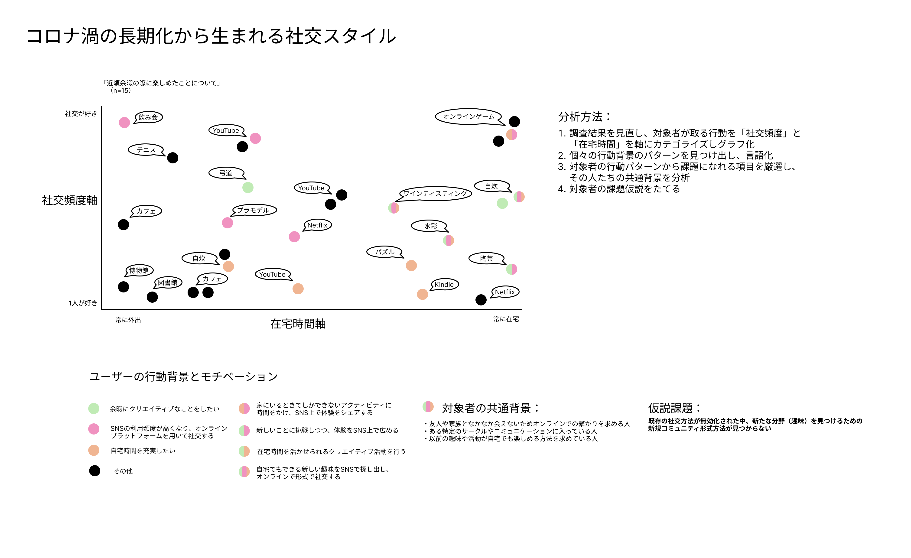
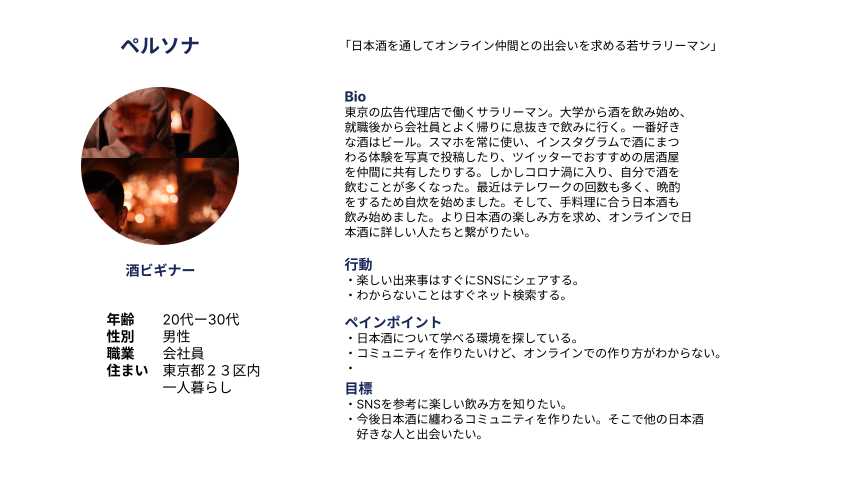
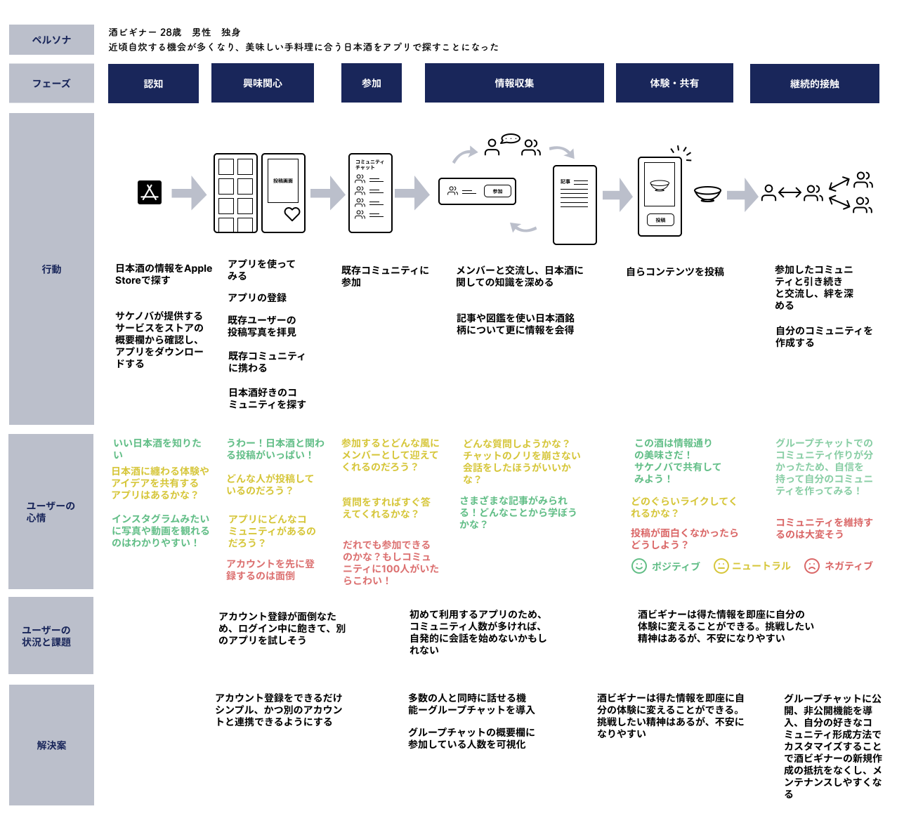
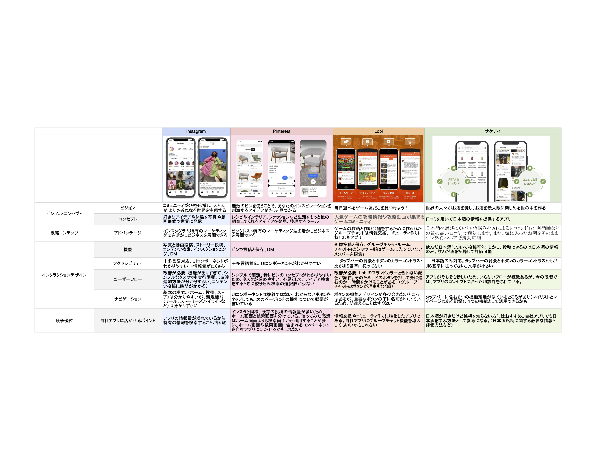
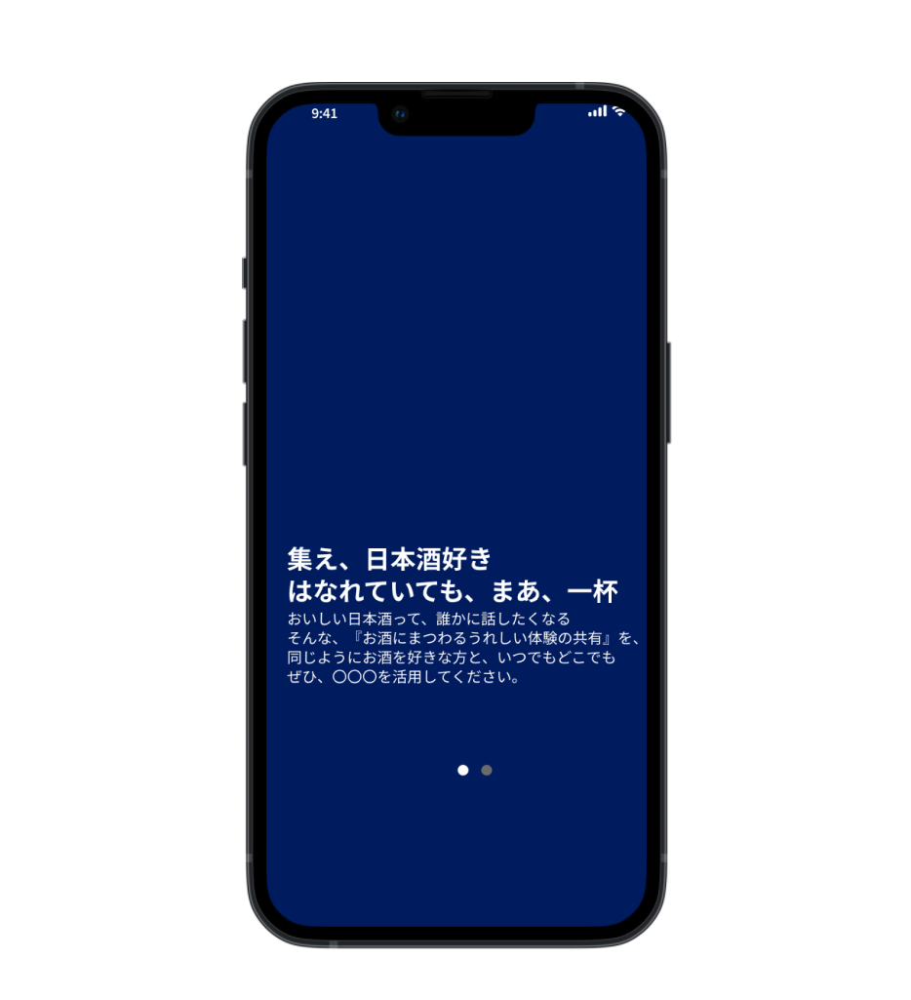
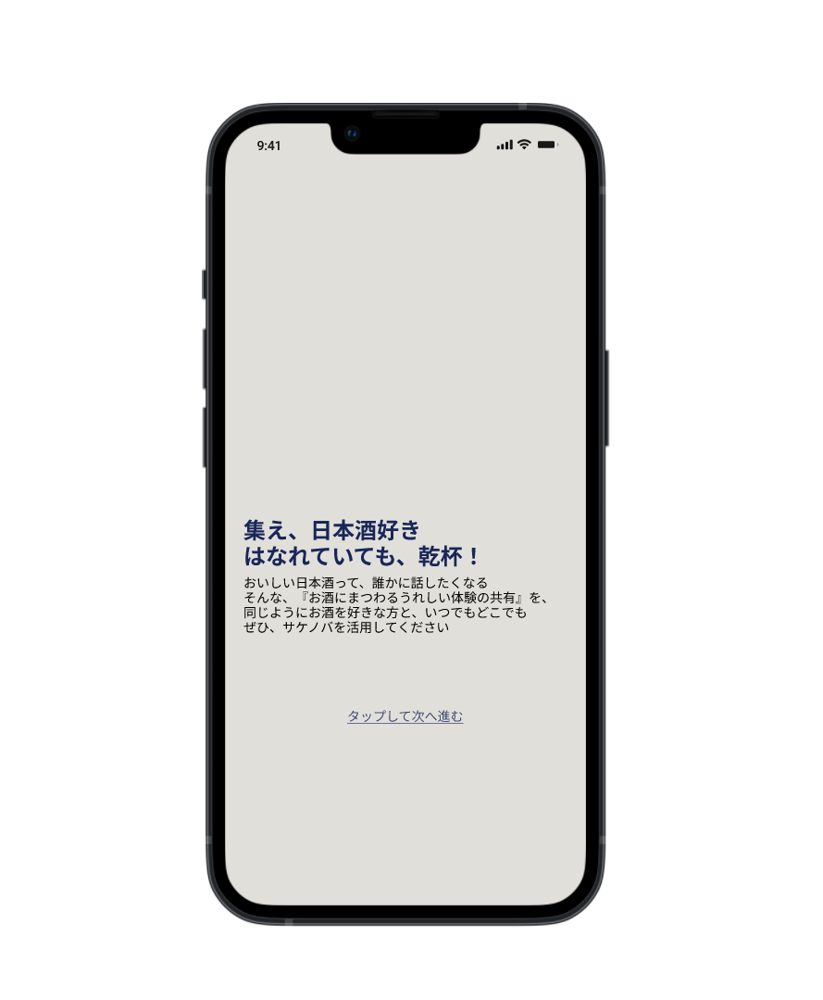

Purpose
Challenge
Introduction
Sakenoba is a prototype designed to explore the creation of an online business during COVID. Given the workshop's limited time for research and prototyping, the focus was not on assessing ROI, but rather on identifying the potential of key features.
Emapthy
I began by doing guerrilla interview to gather user research data, focusing on the theme of "New lifestyles and changes under the influence of COVID." I conducted both quantitative and qualitative analysis on 15 participants, along with behavioral observations, to identify their pain points. This approach helped me form the hypothesis: "As traditional social methods become ineffective, many participants struggle to find new communities for specific interests". A key challenge was gathering enough pain points initially. Due to time management issues, several potential pain points were missed, which could have strengthened the findings even more.
User Research
Define
Based on our hypothesis, we decided to focus on one unique interest that people were exploring during the lockdown: SAKE . We then created a persona—a young businessman with a desire to connect with other sake enthusiasts online. This persona highlights the user's background, actions, pain points, and current goals. Using this information, we examined the user's motivations and potential opportunities for using the app through a user journey map. His main motivation is, "Lately, I have more time to prepare my meals, so enjoying a little sake with dinner would be nice!"
User Persona
User Journey Map
While the user journey map helped us determine the app functionalities suited to the persona, we also conducted secondary research on competing apps. By analyzing both the pros and cons of these apps, we were able to extract key features for our own, while gaining insights into their companies' product-market fit (PMF), key performance indicators (KPIs), and target users. However, since our app's focus isn't on marketing at this stage, we limited our analysis to the UI aspects of the existing apps.
Competing App Analysis
Ideate
After finding some key component candidates, we revisted the journey map and added "problem statements after obeservation." The statements are made to ideate potential solutions for the user's interations of the app before actually starting designing. After ideation, we finalized into four main navigation route, "Home, Group Chat, Post, and Discovery". If there is a problem with the components, functionalities, we would revisit the map and ideate again until the prototype goes smoothly.
Prototyping
We began by creating rough sketches for low-fidelity prototypes, where I paid special attention to the
layout and the navigation flow. After sharing the sketches with the team, we realized that there were too
many unnecessary buttons and functions on certain screens. This happened because I had pulled design
elements from existing apps without fully considering the purpose of each feature. From this, I learned
the importance of always focusing on the persona and referring back to previous research data, such as the
user journey map, to design components that align with user needs.
Next, we developed a sitemap to visualize the app’s overall usability flow and identify missing
elements in various components. This sitemap became the foundation for a mid-fidelity wireframe, which
incorporated more detailed visual layers and interactive elements using Figma. I chose Dark Indigo
(#002E4E) as the primary color for the app, inspired by the traditional color of sake flasks.
Site Map

Wireframe Before
Wireframe After
Test
To test our prototype, we recruited five participants with backgrounds similar to our persona. Initially, in an effort to prioritize time efficiency, we shortened the interviews with the first two participants, which left us feeling disconnected from their experiences and unsure whether they fully understood the app. Realizing this, we adjusted our approach for the remaining participants by asking more targeted questions about their lifestyle beforehand, particularly around sake and how they build online communities around their hobbies. This allowed us to gain deeper insights into their backgrounds and form more tailored hypotheses before moving forward with usability testing.
Usability Testing

Iteration
We looked back on the feedback after the testings. For the first feedback, "not wanting to register an account before using the app", we added a function that allows "previewing before register an account" so that the guest user can choose to register from observation.
For second feedback: "Users don't know how to access the existing group chat", we improved the flow efficiency simply by changing the accessibility location(from profile icon to chat icon.)
Finally, the problem of "Hard to read layout" feedback lies on the readability. We fixed the issue by adding couple of lines that separate individual components and added more background colors with higher contrast ratio for better accessibility.
Review
This 2-week workshop provided me a foundational understanding of agile development. While the core concept of Sakenoba was well-established through prior user research, the most challenging phase of the project was testing. Due to the app’s niche target group, recruiting participants who closely matched our persona proved difficult. To address this, we expanded our recruitment to include not only sake enthusiasts but alcohol consumers in general, asking them to "assume" the app was tailored to their preferred beverages. This insight could be crucial for the app’s future development and may also influence considerations of its ROI.